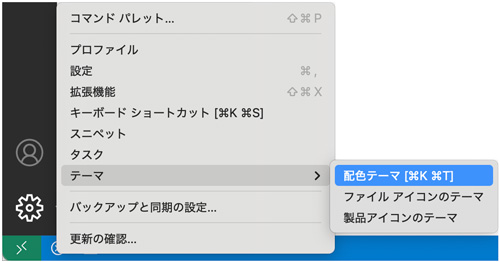
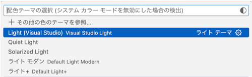
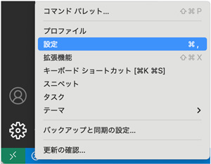
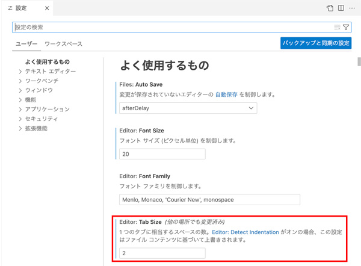

学習ポータル
🔍
🏠 ホーム
›
Web白描
›
VS Code - 初期設定
VS Code - 初期設定
VS Code
2026/01/07
VS Code - 初期設定
配色テーマの切り替え
初心者の場合、「入力ミス」を発見しやすい配色を選びます


設定（歯車マーク）

タブサイズ
インデント１つあたりの見た目が半角スペース何個分になるかを選択します

← 前の記事
Visual Studio Code インストール
次の記事 →
VS Code - 拡張機能